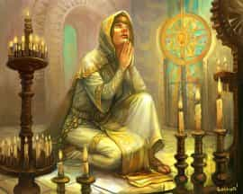

- 1 уровень, ограждение (ритуал)
- Время накладывания: 1 час
- Дистанция: Касание
- Компоненты: В, С, М (порошок серебра стоимостью 25 зм, расходуемый заклинанием)
- Длительность: Мгновенная
- Классы: жрец, паладин
Вы совершаете особую религиозную церемонию, наполненную магией. Когда вы накладываете заклинание, выберите один из следующих обрядов, цель которого должна находиться в пределах 10 футов от вас во время накладывания.
Благословение воды. Вы прикасаетесь к одной фляге воды и делаете её святой водой.
Венчание. Вы касаетесь взрослых Гуманоидов, желающих связать себя узами брака. В течение следующих 7 дней каждая цель получает бонус +2 к КД пока они находятся в пределах 30 футов друг от друга. Существо может получить преимущества от этого обряда снова, только если оно овдовело.
Заупокойный обряд. Вы касаетесь одного трупа, и в течение следующих 7 дней цель не может стать Нежитью, кроме как с помощью заклинания исполнения желаний [wish].
Искупление. Вы касаетесь одного согласного существа, чьё мировоззрение было изменено, и совершаете проверку Мудрости (Проницательность) Сл 20. При успехе вы возвращаете цели её изначальное мировоззрение.
Посвящение. Вы касаетесь одного Гуманоида, который хочет посвятить себя служению вашему богу. На следующие 24 часа, каждый раз, когда цель совершает спасбросок, она может бросить к4 и добавить выпавшее число к результату. Существо может получить преимущества от этого обряда только единожды.
Становление. Вы касаетесь одного взрослого Гуманоида, который достиг совершеннолетия. На следующие 24 часа, каждый раз, когда цель совершает проверку характеристики, она может бросить к4 и добавить выпавшее число к результату. Существо может получить преимущества от этого обряда только единожды.
Вручение (UA). Вы касаетесь одного согласного Гуманоида. Выберите одно заклинание 1-го уровня, которое вы подготовили, и используйте ячейку заклинаний и материальные компоненты, как если бы вы наложили это заклинание. Заклинание не возымеет эффекта. Вместо этого цель может наложить это заклинание один раз, не тратя ячейку заклинаний и не используя материальные компоненты. Если цель не наложит вложенное заклинание в течение 1 часа, оно будет утеряно.
Церемония — Заклинания
Церемония [Ceremony]XGE
Галерея

Комментарии
Если у вас жрец с злым богом, найдите разумное тело, лишите его возможности побега, обвенчай его с собой используя очарование, приказ и так далее, или запытай до его согласия, получи 2 к КД, затем таскай его везде ссобой, через неделю убей и подбери новое тело.
Также можно если вас 4 игрока постоянное поочередно убивать сопартийцев и воскрешать их поочередно венчая и венчаясь с ними.
Если что то так не работает, искренне извиняюсь за заблуждение, но мне идея нравится и если кто то в моей игре такое придумает, я раз 10 разрешу, а потом приду аватаром бога этого жреца))
К слову. Рассеивание магии может снять эффект и венчания, но не его дебафф. Будьте осторожны )
Медовый месяц
Можно повторно получить +2 к КД но потратив 50 зм в качестве материального компонента за каждый день когда будет работает эффект заклинания (можно их дополнительно тратить во время эффекта заклинания), можно наложить лишь на пару что уже получила до этого эффект от "венчания", и лишь раз в месяц
1) Если супруг/супруга были воскрешены - не засчитываем как "овдовел". Так как уточнений этого термина нет, то вполне логично считать, что смерть должна быть окончательной.
2) Супруги должны быть по-настоящему согласны на брак - запытать/очаровать цель не будет считаться "желанием", а скорее принуждением/обманом.
3) Вытекает из пункта 2 - нельзя пожениться просто ради +2 перед финальным боем, если до этого персонажи не были замечены в искреннем желании связать себя узами брака.
Нигде не написано, что супруг должен быть жив. Т.е. могу я жениться - грохнуть жену - таскать с собой её труп и получать бонус +2 КД - жениться ещё раз, т.к. условия позволяют жениться снова, овдовев - таскаю ещ один труп жены и получаю +2 КД - и так до тех пор пока не израсходуется лимит по грузоподъёмности.
Кстати, условие говорит про согласного ГУМАНОИДА. Его состояние на момент согласия тоже не прописано. Т.е. к примеру посредством разговора с мёртвыми спрашиваешь у трупа "согласен(на) ли ты выйти обвенчаться с таким-то" - получаешь утвердительный ответ и далее проводишь ритуал до конца. Или всё же на момент применения ритуала разговор с мёртвыми разговаривающий труп гуманоида уже не считается гуманоидом, а считается нежитью?
Для удобства переноски трупа с собой можно использовать кстати гремлинов - единственных существ с типом "гуманоид" крошечного размера.
Так что условия:
Я - существо - я могу получить бонус от этого заклинания
Я - одна из целей заклинания - я могу получить бонус от этого заклинания
Я - нахожусь в 30 фт от своей супруги - я могу получить бонус от этого заклинания
Всё соблюдено.
Ни одного условия окончания действия заклинания не сработало.
Разберём тезис "если существо перестаёт быть гуманоидом, то оно теряет бонус":
Условие "быть гуманоидом" прописано в отношении соматического компонента заклинания "Вы касаетесь взрослых Гуманоидов, желающих связать себя узами брака". Условие прерывания бонуса прописано только в отношении дистанции. В отношении же субъектов прописано в виде императива "каждая цель получает бонус", т.е. это свершившийся факт и прописано именно "цель". Но применяя обратное построение выйдет, что "целью данного заклинания могут быть лишь взрослые гуманоиды", тогда и получается, что, соблюдая закон тождества, если существо перестаёт быть гуманоидом, то оно прекращает быть целью заклинания.
Вывод: тезис верен
В отношении мёртвого гуманоида также верен тезис, что он не перестаёт быть гуманоидом. По крайней мере до тех пор пока не будет преобразован в нежить (или иную форму существования) посредством магии.
Другой вопрос, что означает "они находятся в пределах 30 футов друг от друга"? Находится ли мой супруг рядом со мной в том случае если он мёртв? Его физическое тело находится рядом со мной однозначно, однако вкладывается ли в это понятие лишь физическое тело. Однако в физическом теле нет ни души (при условии её существования), ни сознания, ни жизненных процессов.
Про душу:
Тут я бы применил такой подход - вопрос измерения расстояния между объектами применим лишь к объектам имеющим физическое воплощение, т.е. то, от чего измеряется расстояние должно иметь вполне конкретное местоположение в наблюдаемой реальности и это можно сказать только по отношению к физическому телу. Местонахождение души же неопределимо по своей сути, т.к. у души нет физического воплощения (кроме тех случаев, когда оно появляется в результате воздействия на душу какими либо заклинаниями и/или проклятиями) - душа в принципе неопределима как таковая.
Про сознание:
Наличие сознания в теле подвержено тем же правилам, что и душа. Пытаться доказать, что у сознания есть физическое местоположение в мозге существа не имеет смысла, т.к. во-первых, есть существа у которых нет мозга, но есть сознание; во-вторых само существование сознания является исключительно субъективным и недоказуемым. Плюс отсутствует условие, которое распространено в подобного рода заклинаниях "находящихся в сознании".
Про жизненные процессы:
Тут вообще просто. В организме живого гуманоида протекает множество жизненных процессов. А множество может и не протекать. Наличие какого из жизненных процессов или их сочетания делает субъекта субъектом? Ответ: Отсутствие какого-либо жизненного процесса по отдельности не может лишить гуманоида субъектности. Соответственно также не может её лишить и отсутствие некоторой части совокупности жизненных процессов в любой комбинации. Следовательно не лишается гуманоид субъектности и при отсутствии вообще всех жизненных процессов.
Поэтому по прежнему не вижу противоречия в утверждении "мёртвый гуманоид может продолжать быть целью заклинания". Мёртвый гуманоид не может стать целью заклинания, т.к. не может выразить своего согласия по условию заклинания (хотя некоторые считают, что молчание знак согласия), но продолжать являться ей - вполне.
Получается, что имея запас магических реагентов (порошок серебра стоимостью 25 зм) можно из деревушки бесполезных и беспомощных НПС сделать отряд который вольёт в противника несколько Направляющих снарядов. Ведь церемонию же не обязательно использовать как ритуал - можно использовать как просто заклинание с тратой ячейки.
Т.е. одному НПС сделать вручение посредством ритуала и ещё 4-м просто задействовав свою ячейку.
Обязательно ли вода должна находиться во фляге, чтобы превратить её в святую?
На сколько чистой должна быть вода? Можно ли таким образом превратить в святую воду мочу?
Можно ли превратить воду, которая уже находится внутри существа в святую?
И финальное: Мочу (или иную телесную жидкость) внутри исчадия превратить в святую воду, то будет ли оно получать 2к6 лучистого урона каждый ход до тех пор пока не избавится от этой жидкости?
Если провести заупокойный обряд на теле только что убитого лича, то сможет ли он переродиться с помощью своего филактерия?
"Когда тело лича случайно или намеренно разрушается, его воля и разум уходят из тела, оставляя позади лишь бездыханный труп. В течение нескольких дней рядом с филактерием лича формируется новое тело из светящегося дыма, исходящего из предмета."
Значит ли это, что если существо превратить в предмет посредством истинного превращения, то оно повторно сможет получить этот эффект?
Значит ли это, что заблотав злого лича (взяв на понт к примеру), который при жизни был добрым - принять искупление, можно получить доброго лича?